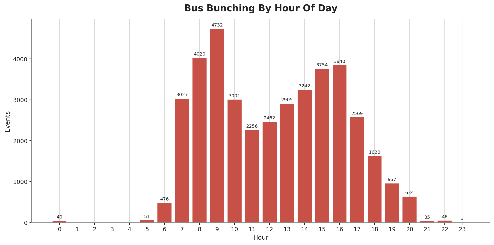
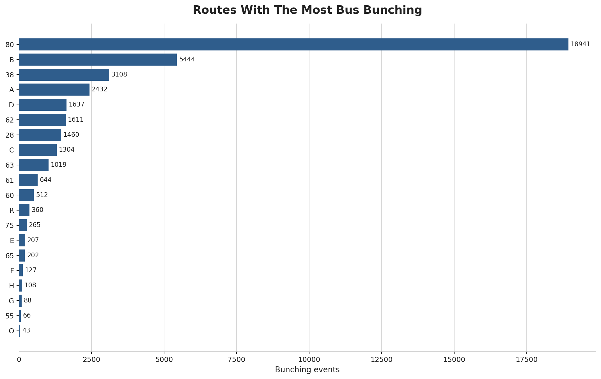
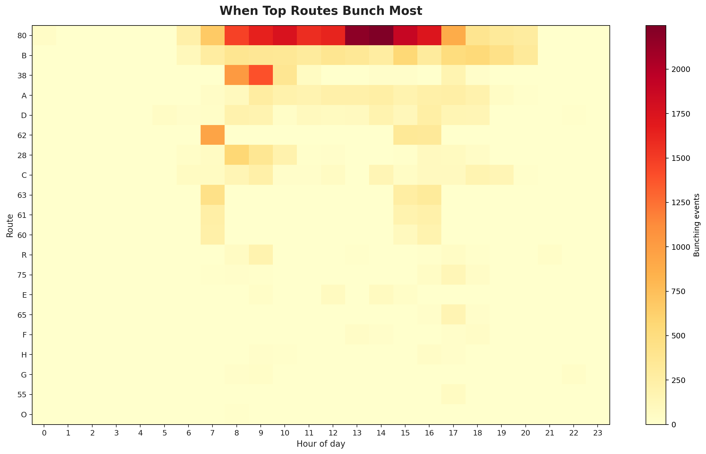
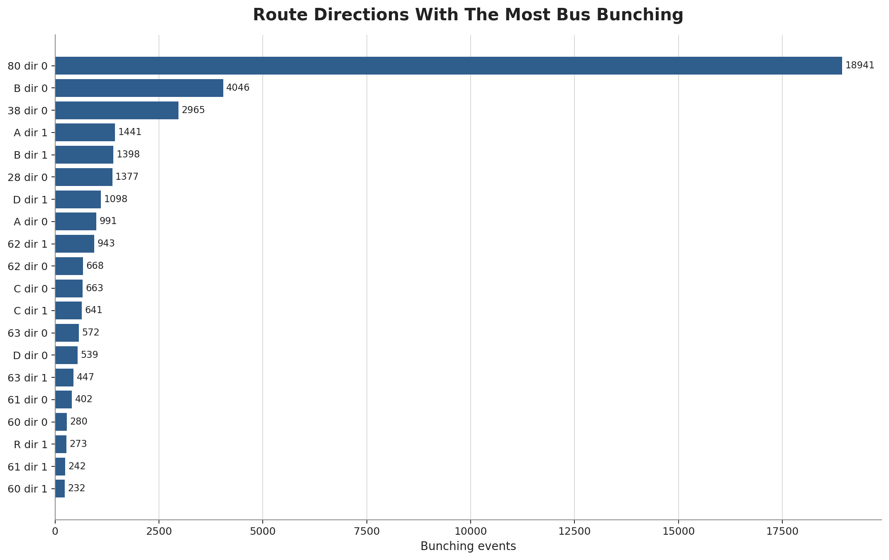
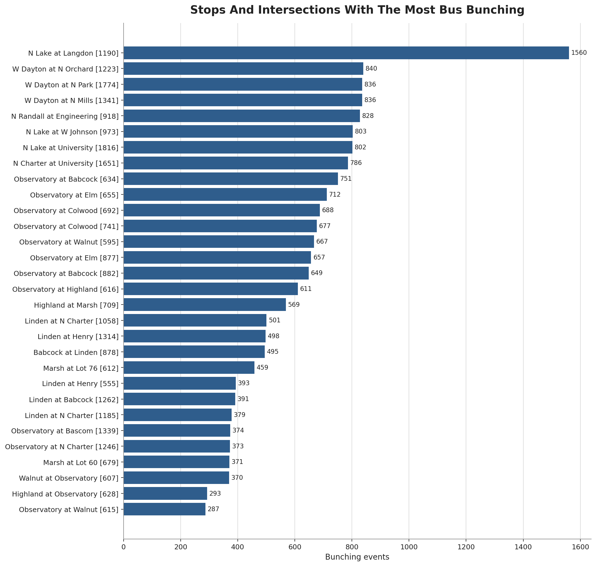

Bus bunching
Two buses on the same route and direction arrive too close together.
IP3 Partner Agency
Madison, Wisconsin.
AI Prediction
The prediction ranks where Madison Metro Transit is most likely to see bus bunching next, using observed patterns by route, hour, weekday, and stop location from the current export.
Use this list to decide where to look first. It does not predict that a specific bus will bunch.
| Day | Route | Hour | Predicted location | AI priority | Prediction score | Evidence |
|---|---|---|---|---|---|---|
| Thu Oct 1 | 80 | 13:00 | N Lake at Langdon [1190] | High | 80/100 | 581 stop-level observations; same weekday history (Thursday) |
| Thu Oct 1 | 80 | 14:00 | N Lake at Langdon [1190] | High | 79/100 | 576 stop-level observations; same weekday history (Thursday) |
| Thu Oct 1 | 80 | 16:00 | N Lake at Langdon [1190] | High | 74/100 | 539 stop-level observations; same weekday history (Thursday) |
| Thu Oct 1 | 80 | 09:00 | N Lake at Langdon [1190] | High | 71/100 | 518 stop-level observations; same weekday history (Thursday) |
| Thu Oct 1 | 80 | 11:00 | N Lake at Langdon [1190] | High | 71/100 | 512 stop-level observations; same weekday history (Thursday) |
| Thu Oct 1 | 80 | 15:00 | N Lake at Langdon [1190] | High | 70/100 | 504 stop-level observations; same weekday history (Thursday) |
| Day | Route | Hour | Predicted location | AI priority | Prediction score | Evidence |
|---|---|---|---|---|---|---|
| Fri Oct 2 | 80 | 10:00 | N Lake at Langdon [1190] | High | 100/100 | 725 stop-level observations; same weekday history (Friday) |
| Fri Oct 2 | 80 | 14:00 | N Lake at Langdon [1190] | High | 85/100 | 618 stop-level observations; same weekday history (Friday) |
| Fri Oct 2 | 80 | 15:00 | N Lake at Langdon [1190] | High | 81/100 | 586 stop-level observations; same weekday history (Friday) |
| Fri Oct 2 | 80 | 11:00 | N Lake at Langdon [1190] | High | 70/100 | 506 stop-level observations; same weekday history (Friday) |
| Fri Oct 2 | 80 | 08:00 | N Lake at W Johnson [973] | Medium | 66/100 | 481 stop-level observations; same weekday history (Friday) |
| Fri Oct 2 | 80 | 13:00 | N Lake at Langdon [1190] | Medium | 63/100 | 455 stop-level observations; same weekday history (Friday) |
Patterns concentrate by route, hour, and repeated stop locations.
Top route: 80. Busiest hour: 09:00.
These charts summarize the current Madison Metro Transit event export. Each row is a stop-level observation where two adjacent buses on the same route and direction were predicted to arrive closer together than the scheduled-headway threshold.
The current file covers 2026-09-09 to 2026-09-19 and contains 39,670 stop-level observations across 24 routes and 904 stops.
Counts are stop-level observations. A close bus pair can be counted at multiple downstream stops if it remains bunched along the route.
Shows how observations vary by service date in the current export. Spikes are useful review dates, not proof of a one-time external cause. Wednesday, Sep. 2 was the first day of UW-Madison classes; use that date as a before-and-after marker for campus travel patterns. The current event export starts after Sep. 2.

Shows when observations concentrate during the service day. Use the tallest bars to target schedule review, dispatch monitoring, or field follow-up.

Ranks routes by stop-level observations. Higher counts indicate where bus-bunching prediction should focus first in the current export.

Rows are routes and columns are hours of day. Hotter cells show route and hour combinations with more repeated stop-level observations.

Splits route totals by GTFS direction_id, which helps separate inbound and outbound patterns when the same route has different operating conditions by direction.
| Date | Hour | Routes | Observations |
|---|---|---|---|
| 2026-09-10 | 09:00 | 11 | 835 |
| 2026-09-15 | 09:00 | 8 | 763 |
| 2026-09-10 | 08:00 | 10 | 699 |
| 2026-09-16 | 08:00 | 10 | 696 |
| 2026-09-10 | 07:00 | 10 | 663 |
| 2026-09-15 | 08:00 | 9 | 613 |
| 2026-09-14 | 09:00 | 8 | 611 |
| 2026-09-18 | 15:00 | 9 | 603 |
| 2026-09-16 | 09:00 | 8 | 578 |
| 2026-09-18 | 10:00 | 5 | 564 |
Open the interactive map to view stop locations and observation counts.
Open full interactive map
Ranks stops and intersections by repeated observations. These are useful candidates for field review, stop-area operations checks, or schedule timing review.
| Route | Observations | Top stop | At stop | Top hour | At hour |
|---|---|---|---|---|---|
| 80 | 18,941 | N Lake at Langdon | 1,560 | 14:00 | 2,246 |
| B | 5,444 | Knutson at Westport | 259 | 15:00 | 554 |
| 38 | 3,108 | Observatory at Colwood | 153 | 09:00 | 1,391 |
| A | 2,432 | High Point | 100 | 09:00 | 280 |
| D | 1,637 | W Johnson at N Frances | 70 | 16:00 | 250 |
| 62 | 1,611 | S Gammon at Schroeder | 181 | 07:00 | 943 |
| 28 | 1,460 | Observatory at Colwood | 70 | 08:00 | 567 |
| C | 1,304 | University at N Breese | 31 | 09:00 | 234 |
| Stop | Stop ID | Routes affected | Observations |
|---|---|---|---|
| N Lake at Langdon | 1190 | 1 | 1,560 |
| W Dayton at N Orchard | 1223 | 1 | 840 |
| W Dayton at N Park | 1774 | 1 | 836 |
| W Dayton at N Mills | 1341 | 2 | 836 |
| N Randall at Engineering | 918 | 2 | 828 |
| N Lake at W Johnson | 973 | 1 | 803 |
| N Lake at University | 1816 | 1 | 802 |
| N Charter at University | 1651 | 4 | 786 |
| Observatory at Babcock | 634 | 4 | 751 |
| Observatory at Elm | 655 | 4 | 712 |
Two buses on the same route and direction arrive too close together.
A detected bunching case at one stop and snapshot. One close bus pair may produce multiple stop-level observations as it travels along the route.
How close the buses were compared with the bunching threshold. Higher severity means the buses were closer together.
Repeat patterns by route, stop, day, or hour.
Spikes linked to incidents, detours, or other unusual operating conditions.
Weather is context for interpretation, not a causal finding.
No forecast rows available.